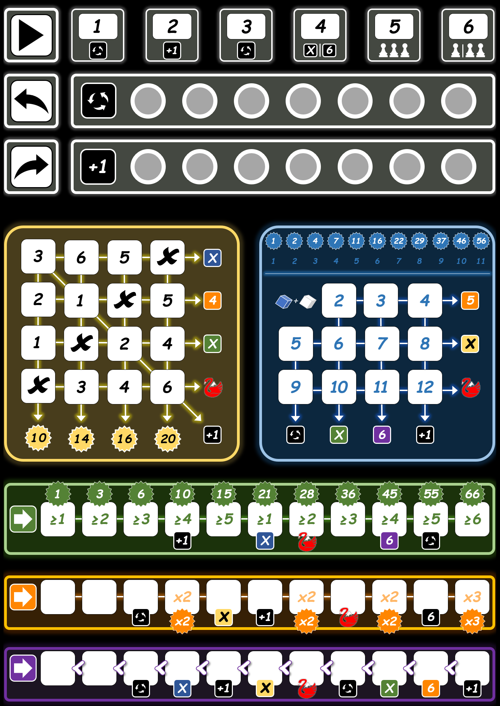
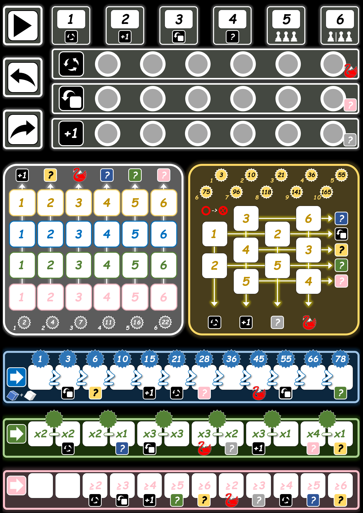
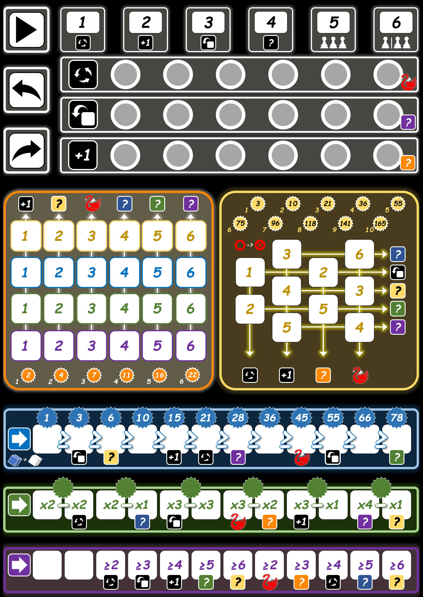

Sorry, your browser does not support the HTML5 canvas tag.
New game
Clever
Twice as
Clever
Alternative color
Continue
current game
Hint: Press ‘R’ to rotate
"Clever" by Wolfgang Warsch - 999 Games - HTML programming by Ric Zwanenberg (December 2020;
)